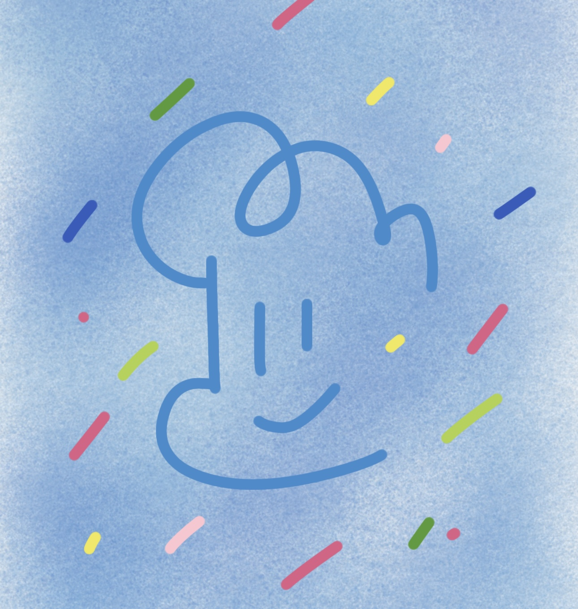

Xifeng / Student / Writer / Builder
把渺小个体的 文字与感悟 做成一座 能被看见的岛屿。
我是西风，一名大学生。这里会展示我的个人信息、诗歌与小说作品集， 也会开放我整理过的课堂笔记，给学弟学妹免费下载。

头像印象
保留原始笔触 / 呈现安静而清澈的气质
西风的岛屿
作品、文字、感悟与分享
About
有写作感，也有作品表达力
这里不是一份被匆匆扫过的介绍，而更像一间慢慢亮起的书室。 我把写下的诗、小说与课堂整理，都安放在同一处，让它们彼此照见。
个人介绍
西风
大学生，喜欢把日常观察、课程经验和文字创作整理成更耐看的形式。 我偏爱温柔但有记忆点的视觉表达，也相信分享本身就是一种作品。
个人网站
校园生活
写作表达
资料分享
网站内容
- 个人信息 一眼看见你是谁，你在做什么。
- 文字作品 把诗歌与小说做成真正可阅读、可收藏的在线作品集。
- 笔记下载 对学弟学妹真正有帮助的公开资料库。
Portfolio
作品集
这些文字曾在很多夜里被写下，如今被安放成三本书， 等候被翻开、被停留、被读到。
Current Works
三本书，静静并排在这里
《小小的灯》分作西风与月光两册，《山之巅》则独立成卷。 它们各自发声，也彼此映照。
Notes Library
课程笔记免费下载
先开放两份我自己常用也最完整的课程笔记。 你可以在这里直接预览，再决定是否下载保存。